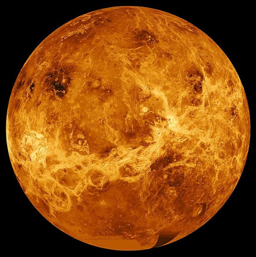

A continuación de Mercurio encontramos a Venus. Es el que más se parece a la
Tierra. Está cubierto de nubes muy espesas que reflejan la luz solar, de modo
que por la noche se ve brillante y podemos distinguirlo a simple vista.
Su nombre es en honor a Venus, diosa romana del amor.
